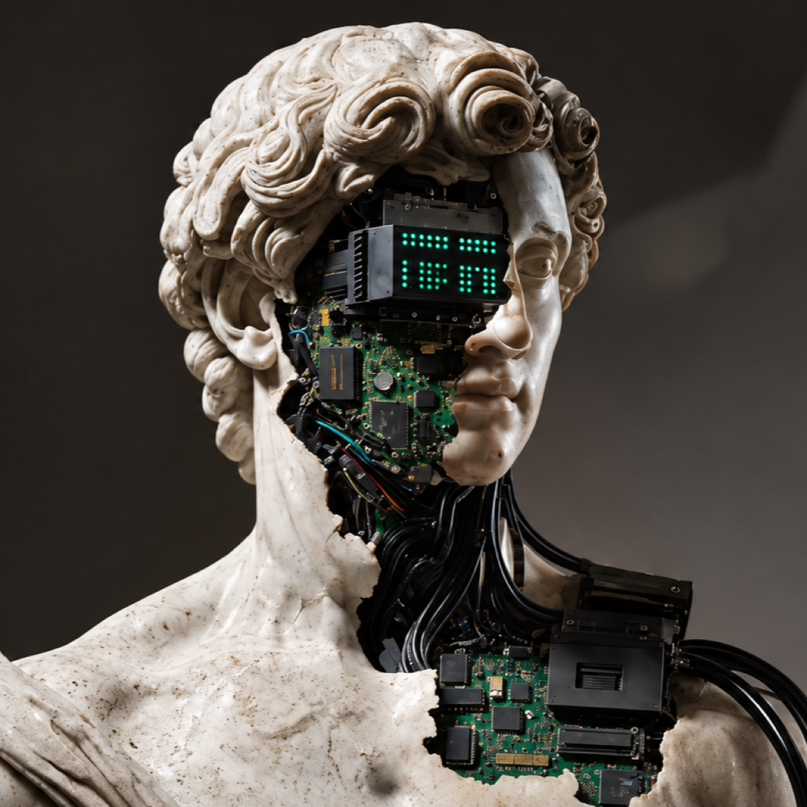

Yang Xuan — AI Product Manager
Scroll把 AI 的能力，
做成可信的产品。
From Prompt to Product.
您好，我叫杨轩。我是一名 AI 产品经理。我相信这一代 PM 的核心竞争力，
是 AI 应用能力 × 产品思维 × 审美 的组合——
从想法到上线，一个人就是一条完整流水线。
欢迎来到 YXX 的 Agent。
 DeepSeek
DeepSeek
 Claude
Claude
 ChatGPT
▲Kimi
ChatGPT
▲Kimi
 Cursor
Cursor
 Gemini
▲WorkBuddy
Gemini
▲WorkBuddy
 Dify
Dify
AI 应用能力
AI Application — Build, not just talk.不停留在「会用 ChatGPT」。我能用 Dify 搭建真实可用的 AI 应用与工作流， 用结构化输出保证结果可靠，用 AI 结对编程把想法快速变成可运行的东西。
AI 应用搭建
用 Dify 从零搭建 AI 应用：知识库问答、多步骤工作流、结构化输出，交付的是能跑的产品，不是演示 Demo。
Prompt 工程
把模糊需求翻译成稳定的提示词系统：角色定义、约束设计、输出格式控制，让结果可复现、可迭代。
Agent 工作流编排
把复杂任务拆解为多智能体协作链路：分工、校验、兜底，理解 Agent 的能力边界与失败模式。
AI 辅助研发
用 AI 结对编程完成从原型到代码的验证闭环——本页面的设计与实现，就是这条工作流的产物。
PM 思维能力
Product Thinking — Define the problem first.工具会过时，思维方式不会。我的产品方法论：先定义真问题，再设计解法， 用数据验证假设，用文档对齐团队。
先定义问题，再谈方案。
需求的背后是动机，功能的背后是取舍。
需求分析
从用户声音与竞品动态中识别真伪需求，建立优先级判断框架——用 AI 辅助聚类分析，用 PM 的判断力做取舍。
从零到一的产品设计
在没有参照系时定义产品：目标用户、核心场景、最小可行闭环。用最快的方式验证方向，而不是堆功能。
PRD 与表达
把想法沉淀为清晰的 PRD 与原型，让设计、研发、AI 工具都能准确执行——文档的精度决定协作的效率。
数据驱动迭代
小步上线，用数据验证每一次假设。定义北极星指标与过程指标，让迭代方向有依据而非凭感觉。
审美能力
Aesthetic Sense — Taste is a skill.审美不是「感觉不错」，而是一套可以落地、可以复用的标准。它决定了一个产品给人的第一印象， 也决定了细节的最终品质。
版式与留白
用字重、字距和留白建立层次，而不是用颜色和边框堆砌。大字是态度，留白是自信。
设计系统思维
先建立 token 和组件规范，再画界面。一致性不是约束，而是让产品「看起来被认真对待过」。
细节与克制
对齐差 1px 能看出来，配色多一档能感觉到。克制用色、克制装饰——你正在看的这个页面，就是审美能力的证明。
少而精，每一件都算数。
作品在积累中——我更愿意展示思考的完整度。以下为概念设计，正式项目持续更新。
AI 对话助手 · 概念设计
面向知识工作者的 AI 助手概念：从用户场景出发定义对话结构与信息层级，探索「克制」的 AI 产品气质——功能可以多，感知必须简单。
AI 工作流编排 · 概念设计
基于 Dify 的多步骤工作流设计练习：把模糊的业务需求拆解为「输入 → 编排 → 校验 → 输出」的结构化链路，输出可解释、可复用的流程。
✓ 更多作品整理中：AI 产品拆解、需求分析文档与 Dify 应用实践。